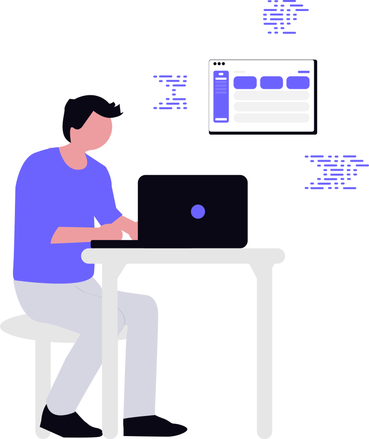

iMobile Bill Calculator
A C++ program that calculates a customer's monthly mobile phone bill based on their selected plan.
Hi. My name is Alex. I'm currently attending Broward College for my associate's in Software Development. I'm trying to pursue a career as a software developer after I'm done with school. I will be pursuing a bachelor's degree after my associate's degree to further my education.
I've always been interested in technology. I have always been fascinated by different programs, apps, and how they work. Currently, I'm gathering all the knowledge I need about programming languages, problem solving, and software development. I want to gain more knowledge on using programming to find different solutions to different problems.
This is my portfolio, where you can see the different projects I have done in regard to programming, my technical skills, and how I'm progressing toward becoming a software developer. I am looking to gain more knowledge as I continue my education. I would also like to better my programming skills and work on some challenging projects. Feel free to look through.

A C++ program that calculates a customer's monthly mobile phone bill based on their selected plan.
A C++ board game where players make decisions, encounter different scenarios, and earn or lose points as they progress through the game.